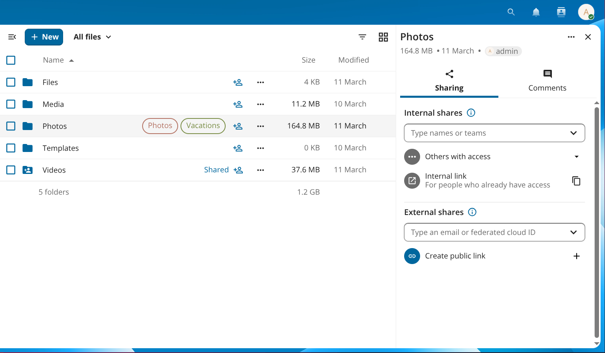
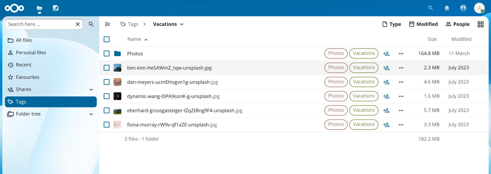
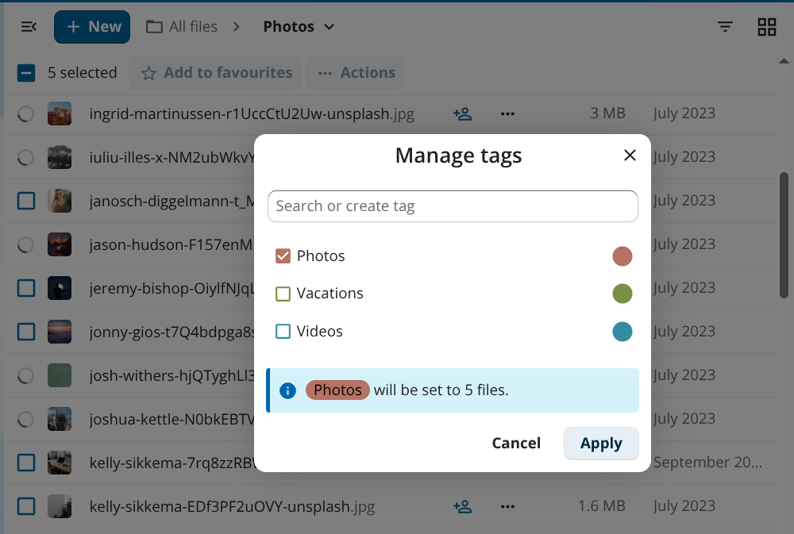

Systemmærker
Systemmærker er etiketter for hele serveren, som du kan sætte på filer og mapper for at organisere dem, filtrere fillisten og styre automatiske arbejdsgange som regler for opbevaring og adgangskontrol.
Mærker vises direkte på rækkerne med filer og mapper i Filer, så du hurtigt kan se, hvilke etiketter der er tildelt:

Figur 1: Mærker vises direkte på filer og mapper.
Mærker oprettes af administratorer i serverens indstillinger. Afhængigt af serverens opsætning kan almindelige brugere måske også oprette mærker – din administrator kan begrænse oprettelsen af mærker til administratorer.
Adgangsniveauer for mærker
Hvert mærke har et af tre adgangsniveauer, der styrer, hvad almindelige brugere kan se og gøre:
Niveau |
Synligt for brugere |
Brugere kan tildele/fjerne |
|---|---|---|
Offentlig |
Ja |
Ja |
Begrænset |
Ja |
Nej |
Usynlig |
Nej |
Nej |
Begrænsede og usynlige mærker bruges af administratorer til automatiske arbejdsgange. Du kan ikke omgå dem ved selv at fjerne mærket.
Gennemse filer efter mærke
Klik på navigationsikonet (≡) øverst til venstre i Filer for at åbne navigationspanelet, og klik derefter på Mærker. Visningen viser alle de mærker, du kan se. Klik på et mærkes navn for at se alle filer og mapper, der har mærket.

Figur 2: Når du klikker på et mærke i navigationspanelet, filtreres fillisten til filer med det mærke.
Tildeling af mærker til filer
Du kan tildele eller fjerne mærker for én fil ad gangen eller for flere valgte filer på én gang.
Én fil
Klik på menuknappen med tre prikker (…) ved en fil eller mappe, og vælg Detaljer for at åbne detaljepanelet.
Klik på Tilføj mærker i detaljepanelet.
Skriv navnet på et mærke i søgefeltet, og vælg mærket på listen.
Klik uden for vælgeren for at lukke den. Ændringerne gemmes med det samme.
Hvis du vil fjerne et mærke, så åbn den samme vælger, og klik på × ved mærkets navn.
Bemærk
Almindelige brugere ser kun offentlige mærker i vælgeren. Begrænsede og usynlige mærker kan kun tildeles af administratorer.
Flere filer
Vælg to eller flere filer ved at klikke på afkrydsningsfeltet til venstre for hver række.
Klik på ··· Handlinger i værktøjslinjen over fillisten, og vælg derefter Administrer mærker.
Markér eller fjern markeringen af mærker i dialogen, der vises. En informationslinje viser, hvordan ændringen bliver anvendt på de valgte filer.
Klik på Anvend.

Figur 3: Med Administrer mærker kan du tildele eller fjerne mærker for flere filer på én gang.
Oprettelse og administration af mærker
Hvis din administrator ikke har begrænset oprettelsen af mærker, kan du oprette et nyt mærke direkte fra dialogen Administrer mærker eller fra vælgeren for en enkelt fil: Skriv et nyt navn i feltet Søg eller opret mærke, og vælg valget Opret mærke, der vises.
Administratorer opretter, omdøber og sletter mærker under Systemindstillinger ‣ Server. Se afsnittet Automated tagging i dokumentationen til administration for at få flere oplysninger om administration af mærker og værktøjer til kommandolinjen.